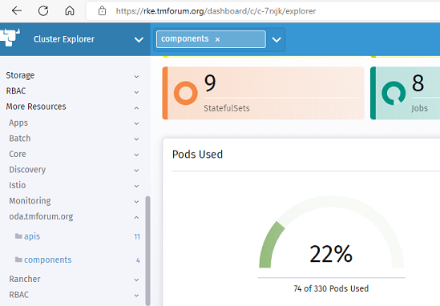
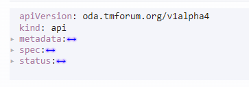
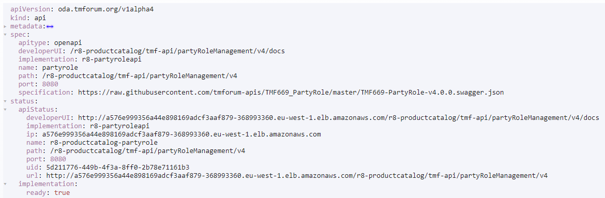

Exploring Custom Resources Troubleshooting Guide
The Reference Implementation of the ODA Canvas is following the Kubernetes Operator pattern - this defines data entities for every resource (component, api etc.) in the Kubernetes API (which is a type of Resource Inventory). This can be very useful for troubleshooting as you can examine the status of every resource.
The status of the resources can be examined with any kubernetes tool: In the examples below we are connected to the TM Forum Open Digital Lab (ODL) and using the Rancher Cluster Explorer tool on the oda-ca-cluster2 cluster: https://rke.tmforum.org/dashboard/c/c-7rxjk/explorer

The custom resources are listed in the left-hand-side menu under oda.tmforum.org. At present, there are two custom resources for component and api, and the Reference Implementation also uses other custom resources provided by istio (VirtualServices and Gateways) and prometheus (Service Monitors).
Every resource in Kubernetes has 5 top-level properties (shown in the diagram below)
The
apiVersionfor the resource.The
kindof the resource.The
metadatathat will include aname,labels(all resources should have aoda.tmforum.org/componentNamelabel with the name of the component to which they belong) and auidthat is the unique ID for that instance of the resource. The child resources of the component will also have aownerReferenceslabel that links that child resource to the parent resource).The
specwhich is the target state for the resource.The
statuswhich is updated by the software operators to reflect the current state of the resources.

For the example API Resource, the spec shows the target state for this API resource (from the parent component) and the status shows details of the current state for the resource - for example it shows that the implementation of the API is ready to receive traffic, and it shows the external URL to the API (through whatever API Gateway and/or Service Mesh that is being used in the implementation).

Troubleshooting tips
When you deploy an ODA Component, you should be able to see an API resource created for every API in the core function, security or management part of that component definition. If you cannot see these resources then the ComponentOperator is not processing that component properly: Check that you are deploying the component in a namespace that is being monitored by the Operator (components namespace in the ODL). Also check that the ComponentOperator is running (in the ‘canvas` namespace in the ODL). Also, check the logs produced by the operator (see Controller Logging ).
If you can see the API resources, look into the status of the API resource: If you are not getting a implementation: ready:true status, then the micro-service that is implementing the API may not be responding to the Kubernetes Health-Check. Check that the micro-service is giving a HTTP 200 response to a GET request at the root of the API.
If the API is not returning the url where the API is being exposed, then check the API Gateway and/or Service Mesh implementation. It is also worth checking the logs produced by the operator (see Controller Logging ).
You can also use the same troubleshooting approach to navigate through the baseline Kubernetes resources and any other installed services (e.g. Istio, Prometheus) that is installed in the cluster.